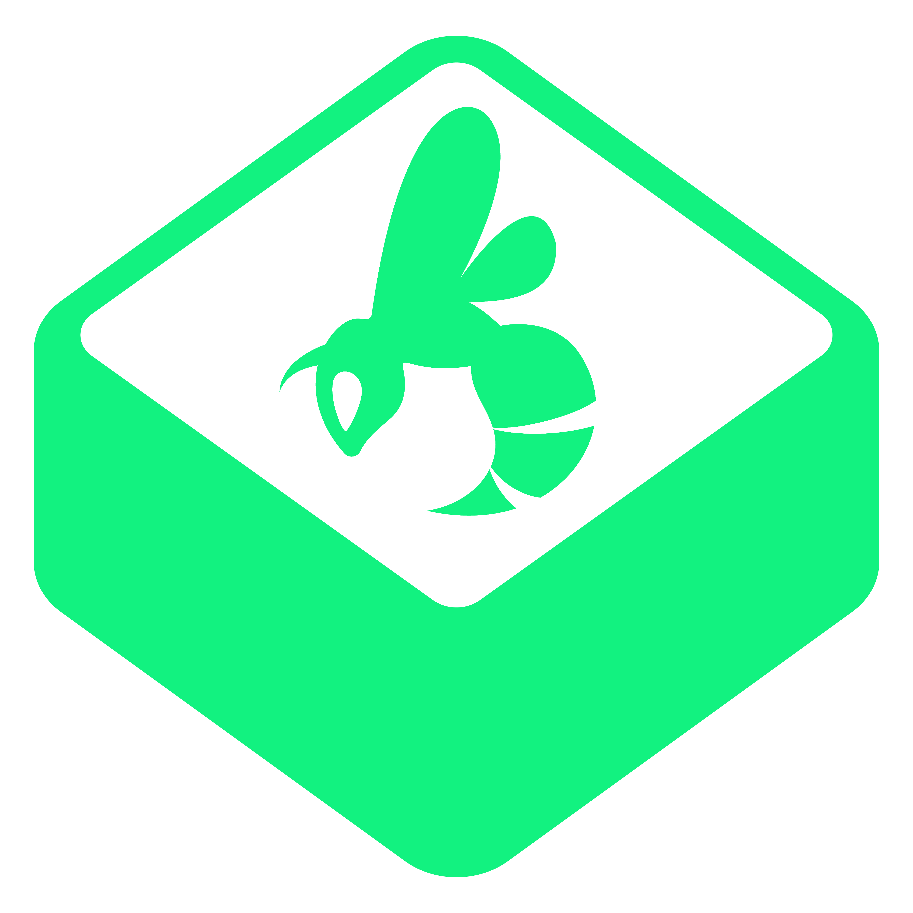

<!DOCTYPE html>
<html lang="es">
<head>
  <meta charset="UTF-8" />
  <meta name="viewport" content="width=device-width, initial-scale=1.0" />
  <title>Recursos del Webinar — Ventas con IA | COLMEN IA</title>
  <link rel="stylesheet" href="colors_and_type.css" />
  <script src="https://unpkg.com/react@18.3.1/umd/react.development.js" integrity="sha384-hD6/rw4ppMLGNu3tX5cjIb+uRZ7UkRJ6BPkLpg4hAu/6onKUg4lLsHAs9EBPT82L" crossorigin="anonymous"></script>
  <script src="https://unpkg.com/react-dom@18.3.1/umd/react-dom.development.js" integrity="sha384-u6aeetuaXnQ38mYT8rp6sbXaQe3NL9t+IBXmnYxwkUI2Hw4bsp2Wvmx4yRQF1uAm" crossorigin="anonymous"></script>
  <script src="https://unpkg.com/@babel/standalone@7.29.0/babel.min.js" integrity="sha384-m08KidiNqLdpJqLq95G/LEi8Qvjl/xUYll3QILypMoQ65QorJ9Lvtp2RXYGBFj1y" crossorigin="anonymous"></script>
  <style>
    *, *::before, *::after { box-sizing: border-box; margin: 0; padding: 0; }

    body {
      background: #f8fdf9;
      color: #151716;
      font-family: "Poppins", sans-serif;
      min-height: 100vh;
      overflow-x: hidden;
    }

    /* Ancho máximo cómodo para pantallas grandes */
    .page-wrap {
      max-width: 1680px;
      margin: 0 auto;
    }

    /* Honeycomb SVG background texture */
    .hive-bg {
      position: fixed;
      inset: 0;
      pointer-events: none;
      z-index: 0;
      opacity: 0.04;
      background-image: url("data:image/svg+xml,%3Csvg xmlns='http://www.w3.org/2000/svg' width='56' height='100'%3E%3Cpath d='M28 66L0 50V18L28 2l28 16v32L28 66zm0 0v34M0 50l28 16M56 50L28 66M0 18l28 16M28 2v32' fill='none' stroke='%2309562c' stroke-width='1'/%3E%3C/svg%3E");
    }

    /* Neon bloom radial */
    .bloom {
      position: fixed;
      border-radius: 50%;
      pointer-events: none;
      z-index: 0;
      filter: blur(90px);
    }
    .bloom-1 {
      width: 700px; height: 700px;
      background: radial-gradient(circle, rgba(18,242,128,0.28) 0%, transparent 70%);
      bottom: -150px; right: -150px;
    }
    .bloom-2 {
      width: 450px; height: 450px;
      background: radial-gradient(circle, rgba(15,59,254,0.10) 0%, transparent 70%);
      top: -80px; left: -80px;
    }

    #root { position: relative; z-index: 1; }

    /* NAV */
    .nav {
      display: flex;
      align-items: center;
      justify-content: space-between;
      padding: 22px 72px;
      border-bottom: 1px solid rgba(9,86,44,0.10);
      backdrop-filter: blur(20px) saturate(180%);
      -webkit-backdrop-filter: blur(20px) saturate(180%);
      position: sticky;
      top: 0;
      z-index: 100;
      background: rgba(248,253,249,0.60);
      max-width: 1680px;
      margin: 0 auto;
    }
    .nav-logo { height: 52px; max-width: 220px; object-fit: contain; object-position: left center; }
    .nav-badge {
      font-family: "Poppins", sans-serif;
      font-size: 11px;
      font-weight: 600;
      letter-spacing: 0.1em;
      text-transform: uppercase;
      color: #09562c;
      border: 1px solid rgba(9,86,44,0.25);
      padding: 4px 14px;
      border-radius: 9999px;
    }
    .nav-right {
      display: flex;
      align-items: center;
      gap: 16px;
    }

    /* INSTRUCTOR TOGGLE */
    .instructor-btn {
      display: flex;
      align-items: center;
      gap: 8px;
      font-family: "Poppins", sans-serif;
      font-size: 12px;
      font-weight: 600;
      letter-spacing: 0.05em;
      text-transform: uppercase;
      color: rgba(21,23,22,0.45);
      background: rgba(21,23,22,0.05);
      border: 1px solid rgba(21,23,22,0.12);
      padding: 8px 16px;
      border-radius: 9999px;
      cursor: pointer;
      transition: all 0.2s;
    }
    .instructor-btn:hover { background: rgba(21,23,22,0.08); color: rgba(21,23,22,0.65); }
    .instructor-btn.active {
      color: #09562c;
      background: rgba(18,242,128,0.12);
      border-color: rgba(9,86,44,0.3);
    }
    .instructor-dot {
      width: 8px; height: 8px;
      border-radius: 50%;
      background: rgba(21,23,22,0.2);
    }
    .instructor-btn.active .instructor-dot { background: #12f280; box-shadow: 0 0 8px rgba(18,242,128,0.6); }

    /* HERO */
    .hero {
      padding: 96px 72px 72px;
      max-width: 1100px;
    }
    .hero-eyebrow {
      font-family: "Poppins", sans-serif;
      font-size: 11px;
      font-weight: 600;
      letter-spacing: 0.15em;
      text-transform: uppercase;
      color: #09562c;
      margin-bottom: 20px;
      display: flex;
      align-items: center;
      gap: 10px;
    }
    .hero-eyebrow::before {
      content: "";
      display: block;
      width: 32px;
      height: 1px;
      background: #09562c;
    }
    .hero h1 {
      font-family: "Anta", sans-serif;
      font-size: clamp(48px, 6vw, 88px);
      font-weight: 400;
      letter-spacing: 0.02em;
      line-height: 1.05;
      color: #151716;
      margin-bottom: 24px;
    }
    .hero h1 span { color: #09562c; }
    .hero p {
      font-size: 18px;
      font-weight: 300;
      line-height: 1.7;
      color: rgba(21,23,22,0.55);
      max-width: 640px;
    }

    .hero-cta {
      display: inline-flex;
      align-items: center;
      gap: 10px;
      margin-top: 32px;
      font-family: "Poppins", sans-serif;
      font-size: 15px;
      font-weight: 700;
      letter-spacing: 0.02em;
      color: #fff;
      background: linear-gradient(135deg, #09562c 0%, #0a6835 100%);
      border: 1px solid rgba(18,242,128,0.4);
      padding: 16px 30px;
      border-radius: 9999px;
      cursor: pointer;
      text-decoration: none;
      box-shadow: 0 6px 24px rgba(9,86,44,0.25);
      transition: all 0.2s;
    }
    .hero-cta:hover { transform: translateY(-2px) scale(1.02); box-shadow: 0 10px 32px rgba(18,242,128,0.35); }

    /* MAIN CONTENT */
    .content {
      padding: 0 72px 140px;
    }

    /* SECTION */
    .section-block {
      margin-bottom: 64px;
    }
    .section-header {
      display: flex;
      align-items: center;
      justify-content: space-between;
      margin-bottom: 24px;
      padding-bottom: 16px;
      border-bottom: 1px solid rgba(9,86,44,0.12);
    }
    .section-title-row {
      display: flex;
      align-items: center;
      gap: 14px;
    }
    .section-icon {
      width: 40px; height: 40px;
      border-radius: 10px;
      display: flex;
      align-items: center;
      justify-content: center;
      background: rgba(9,86,44,0.08);
      border: 1px solid rgba(9,86,44,0.15);
    }
    .section-num {
      font-family: "Anta", sans-serif;
      font-size: 11px;
      color: #09562c;
      letter-spacing: 0.05em;
    }
    .section-title {
      font-family: "Anta", sans-serif;
      font-size: 20px;
      font-weight: 400;
      letter-spacing: 0.03em;
      color: #151716;
    }
    .section-count {
      font-size: 12px;
      font-weight: 500;
      color: rgba(21,23,22,0.35);
      letter-spacing: 0.03em;
    }
    .add-prompt-btn {
      display: flex;
      align-items: center;
      gap: 7px;
      font-family: "Poppins", sans-serif;
      font-size: 12px;
      font-weight: 600;
      letter-spacing: 0.04em;
      color: #09562c;
      background: rgba(18,242,128,0.12);
      border: 1px solid rgba(9,86,44,0.2);
      padding: 8px 18px;
      border-radius: 9999px;
      cursor: pointer;
      transition: all 0.2s;
    }
    .add-prompt-btn:hover { background: rgba(18,242,128,0.22); box-shadow: 0 4px 16px rgba(18,242,128,0.2); }

    /* DOWNLOAD CARD */
    .download-card {
      display: flex;
      align-items: center;
      justify-content: space-between;
      gap: 16px;
      background: linear-gradient(135deg, #09562c 0%, #0a6835 100%);
      border: 1px solid rgba(18,242,128,0.3);
      border-radius: 14px;
      padding: 18px 24px;
      margin-bottom: 16px;
      box-shadow: 0 4px 20px rgba(9,86,44,0.15);
      position: relative;
      overflow: hidden;
    }
    .download-card::before {
      content: "";
      position: absolute;
      top: -40px;
      right: -40px;
      width: 180px;
      height: 180px;
      border-radius: 50%;
      background: radial-gradient(circle, rgba(18,242,128,0.35) 0%, transparent 70%);
      pointer-events: none;
    }
    .download-card-info {
      display: flex;
      align-items: center;
      gap: 14px;
      position: relative;
      z-index: 1;
    }
    .download-icon-box {
      width: 44px; height: 44px;
      border-radius: 10px;
      background: rgba(18,242,128,0.18);
      border: 1px solid rgba(18,242,128,0.35);
      display: flex;
      align-items: center;
      justify-content: center;
      color: #12f280;
      flex-shrink: 0;
    }
    .download-card-text { display: flex; flex-direction: column; gap: 2px; }
    .download-card-title {
      font-family: "Poppins", sans-serif;
      font-size: 14px;
      font-weight: 600;
      color: #fff;
      letter-spacing: 0.02em;
    }
    .download-card-sub {
      font-family: "Poppins", sans-serif;
      font-size: 11px;
      font-weight: 500;
      color: rgba(18,242,128,0.85);
      letter-spacing: 0.06em;
      text-transform: uppercase;
    }
    .download-btn {
      display: flex;
      align-items: center;
      gap: 8px;
      font-family: "Poppins", sans-serif;
      font-size: 12px;
      font-weight: 700;
      letter-spacing: 0.04em;
      color: #09562c;
      background: #12f280;
      border: none;
      padding: 10px 22px;
      border-radius: 9999px;
      cursor: pointer;
      transition: all 0.2s;
      text-decoration: none;
      position: relative;
      z-index: 1;
      flex-shrink: 0;
    }
    .download-btn:hover { background: #fff; box-shadow: 0 0 20px rgba(18,242,128,0.5); transform: scale(1.03); }

    /* TOOLS SECTION */
    .tools-section {
      padding: 0 72px 8px;
    }
    .tools-eyebrow {
      font-family: "Poppins", sans-serif;
      font-size: 11px;
      font-weight: 600;
      letter-spacing: 0.15em;
      text-transform: uppercase;
      color: #09562c;
      margin-bottom: 18px;
      display: flex;
      align-items: center;
      gap: 10px;
    }
    .tools-eyebrow::before {
      content: "";
      display: block;
      width: 32px;
      height: 1px;
      background: #09562c;
    }
    .tools-grid {
      display: grid;
      grid-template-columns: repeat(auto-fit, minmax(280px, 1fr));
      gap: 18px;
    }
    .tool-card {
      display: flex;
      align-items: center;
      gap: 16px;
      background: #fff;
      border: 1px solid rgba(9,86,44,0.12);
      border-radius: 16px;
      padding: 20px 22px;
      box-shadow: 0 2px 12px rgba(9,86,44,0.06);
      transition: border-color 0.2s, box-shadow 0.2s, transform 0.2s;
    }
    .tool-card:hover {
      border-color: rgba(18,242,128,0.5);
      box-shadow: 0 8px 28px rgba(18,242,128,0.14);
      transform: translateY(-2px);
    }
    .tool-icon-box {
      width: 48px; height: 48px;
      border-radius: 12px;
      display: flex;
      align-items: center;
      justify-content: center;
      flex-shrink: 0;
      font-size: 24px;
    }
    .tool-card-text { display: flex; flex-direction: column; gap: 3px; flex: 1; min-width: 0; }
    .tool-card-name {
      font-family: "Poppins", sans-serif;
      font-size: 15px;
      font-weight: 600;
      color: #151716;
      line-height: 1.2;
    }
    .tool-card-sub {
      font-family: "Poppins", sans-serif;
      font-size: 11px;
      font-weight: 500;
      letter-spacing: 0.04em;
      color: rgba(21,23,22,0.45);
    }
    .tool-btn {
      display: flex;
      align-items: center;
      gap: 7px;
      font-family: "Poppins", sans-serif;
      font-size: 12px;
      font-weight: 700;
      letter-spacing: 0.03em;
      color: #fff;
      background: #09562c;
      border: none;
      padding: 10px 18px;
      border-radius: 9999px;
      cursor: pointer;
      transition: all 0.2s;
      text-decoration: none;
      flex-shrink: 0;
    }
    .tool-btn:hover { background: #0a6835; box-shadow: 0 4px 16px rgba(9,86,44,0.3); transform: scale(1.03); }

    /* PROMPT GRID */
    .prompt-grid {
      display: grid;
      grid-template-columns: repeat(auto-fill, minmax(360px, 1fr));
      gap: 20px;
    }
    @media (min-width: 1280px) {
      .prompt-grid { grid-template-columns: repeat(3, 1fr); }
    }
    @media (min-width: 1600px) {
      .prompt-grid { grid-template-columns: repeat(4, 1fr); }
    }

    /* PROMPT CARD */
    .prompt-card {
      background: #fff;
      border: 1px solid rgba(9,86,44,0.10);
      border-radius: 16px;
      padding: 24px;
      position: relative;
      transition: border-color 0.2s, box-shadow 0.2s, transform 0.2s;
      display: flex;
      flex-direction: column;
      gap: 14px;
      box-shadow: 0 2px 12px rgba(9,86,44,0.06);
    }
    .prompt-card:hover {
      border-color: rgba(18,242,128,0.5);
      box-shadow: 0 8px 32px rgba(18,242,128,0.14);
      transform: translateY(-2px);
    }
    .prompt-card-label {
      font-family: "Poppins", sans-serif;
      font-size: 10px;
      font-weight: 700;
      letter-spacing: 0.12em;
      text-transform: uppercase;
      color: #09562c;
    }
    .prompt-card-title {
      font-family: "Poppins", sans-serif;
      font-size: 15px;
      font-weight: 600;
      color: #151716;
      line-height: 1.35;
    }
    .prompt-card-body {
      font-size: 13.5px;
      font-weight: 400;
      line-height: 1.65;
      color: rgba(21,23,22,0.58);
      white-space: pre-wrap;
      flex: 1;
    }

    /* Gradient overflow fade */
    .prompt-body-wrap {
      position: relative;
      max-height: 160px;
      overflow: hidden;
      transition: max-height 0.3s ease;
    }
    .prompt-body-wrap.expanded { max-height: 1000px; }
    .prompt-body-fade {
      position: absolute;
      bottom: 0; left: 0; right: 0;
      height: 48px;
      background: linear-gradient(to bottom, transparent, #fff);
      pointer-events: none;
      transition: opacity 0.2s;
    }
    .prompt-body-fade.hidden { opacity: 0; }

    /* CARD FOOTER */
    .card-footer {
      display: flex;
      align-items: center;
      gap: 8px;
      margin-top: 4px;
    }
    .copy-btn {
      display: flex;
      align-items: center;
      gap: 7px;
      font-family: "Poppins", sans-serif;
      font-size: 12px;
      font-weight: 600;
      letter-spacing: 0.03em;
      color: #fff;
      background: #09562c;
      border: none;
      padding: 9px 18px;
      border-radius: 9999px;
      cursor: pointer;
      transition: all 0.2s;
      flex-shrink: 0;
    }
    .copy-btn:hover { background: #0a6835; box-shadow: 0 4px 16px rgba(9,86,44,0.3); transform: scale(1.02); }
    .copy-btn.copied { background: #12f280; color: #0e100f; }
    .expand-btn {
      font-family: "Poppins", sans-serif;
      font-size: 12px;
      font-weight: 500;
      color: rgba(21,23,22,0.35);
      background: none;
      border: none;
      cursor: pointer;
      padding: 9px 12px;
      border-radius: 9999px;
      transition: color 0.2s;
    }
    .expand-btn:hover { color: rgba(21,23,22,0.6); }

    /* ADMIN CONTROLS */
    .admin-controls {
      display: flex;
      align-items: center;
      gap: 6px;
      margin-left: auto;
    }
    .icon-btn {
      width: 32px; height: 32px;
      display: flex;
      align-items: center;
      justify-content: center;
      background: rgba(21,23,22,0.04);
      border: 1px solid rgba(21,23,22,0.10);
      border-radius: 8px;
      cursor: pointer;
      transition: all 0.2s;
      color: rgba(21,23,22,0.4);
    }
    .icon-btn:hover { background: rgba(21,23,22,0.08); color: rgba(21,23,22,0.8); }
    .icon-btn.danger:hover { background: rgba(255,80,80,0.08); border-color: rgba(255,80,80,0.25); color: #e05050; }

    /* MODAL / EDITOR */
    .modal-overlay {
      position: fixed;
      inset: 0;
      background: rgba(21,23,22,0.45);
      backdrop-filter: blur(8px);
      z-index: 200;
      display: flex;
      align-items: center;
      justify-content: center;
      padding: 24px;
    }
    .modal {
      background: #fff;
      border: 1px solid rgba(9,86,44,0.15);
      border-radius: 20px;
      padding: 36px;
      width: 100%;
      max-width: 600px;
      box-shadow: 0 24px 80px rgba(9,86,44,0.15);
    }
    .modal-title {
      font-family: "Anta", sans-serif;
      font-size: 22px;
      color: #151716;
      margin-bottom: 28px;
      letter-spacing: 0.02em;
    }
    .modal-title span { color: #09562c; }
    .field-label {
      font-size: 11px;
      font-weight: 700;
      letter-spacing: 0.1em;
      text-transform: uppercase;
      color: rgba(21,23,22,0.4);
      margin-bottom: 8px;
      display: block;
    }
    .field-input, .field-textarea {
      width: 100%;
      background: #f8fdf9;
      border: 1px solid rgba(9,86,44,0.15);
      border-radius: 10px;
      padding: 12px 16px;
      font-family: "Poppins", sans-serif;
      font-size: 14px;
      color: #151716;
      outline: none;
      transition: border-color 0.2s;
      margin-bottom: 20px;
    }
    .field-textarea { resize: vertical; min-height: 160px; line-height: 1.6; }
    .field-input:focus, .field-textarea:focus { border-color: rgba(9,86,44,0.4); }
    .modal-actions {
      display: flex;
      gap: 10px;
      justify-content: flex-end;
      margin-top: 4px;
    }
    .btn-primary {
      font-family: "Poppins", sans-serif;
      font-size: 13px;
      font-weight: 700;
      letter-spacing: 0.04em;
      color: #fff;
      background: #09562c;
      border: none;
      padding: 11px 26px;
      border-radius: 9999px;
      cursor: pointer;
      transition: all 0.2s;
    }
    .btn-primary:hover { background: #0a6835; box-shadow: 0 4px 20px rgba(9,86,44,0.3); }
    .btn-secondary {
      font-family: "Poppins", sans-serif;
      font-size: 13px;
      font-weight: 600;
      color: rgba(21,23,22,0.5);
      background: rgba(21,23,22,0.05);
      border: 1px solid rgba(21,23,22,0.12);
      padding: 11px 24px;
      border-radius: 9999px;
      cursor: pointer;
      transition: all 0.2s;
    }
    .btn-secondary:hover { background: rgba(21,23,22,0.09); color: rgba(21,23,22,0.7); }

    /* INSTRUCTOR BANNER */
    .instructor-banner {
      display: flex;
      align-items: center;
      gap: 12px;
      background: rgba(18,242,128,0.08);
      border: 1px solid rgba(9,86,44,0.18);
      border-radius: 12px;
      padding: 14px 24px;
      margin: 0 72px 40px;
      font-size: 13px;
      color: rgba(21,23,22,0.6);
    }
    .instructor-banner strong { color: #09562c; font-weight: 600; }

    /* EMPTY STATE */
    .empty-state {
      grid-column: 1 / -1;
      padding: 48px 32px;
      text-align: center;
      border: 1px dashed rgba(9,86,44,0.2);
      border-radius: 14px;
      color: rgba(21,23,22,0.3);
      font-size: 14px;
    }
    .empty-state strong { display: block; font-size: 16px; margin-bottom: 6px; color: rgba(21,23,22,0.4); font-family: "Poppins", sans-serif; }

    /* FOOTER */
    .footer {
      border-top: 1px solid rgba(9,86,44,0.10);
      padding: 28px 72px;
      display: flex;
      align-items: center;
      justify-content: space-between;
      font-size: 12px;
      color: rgba(21,23,22,0.3);
      max-width: 1680px;
      margin: 0 auto;
    }
    .footer img { height: 20px; opacity: 0.35; }

    /* COPY TOAST */
    .toast {
      position: fixed;
      bottom: 32px;
      left: 50%;
      transform: translateX(-50%) translateY(80px);
      background: #09562c;
      color: #12f280;
      font-family: "Poppins", sans-serif;
      font-weight: 700;
      font-size: 13px;
      letter-spacing: 0.04em;
      padding: 12px 28px;
      border-radius: 9999px;
      z-index: 9999;
      transition: transform 0.3s cubic-bezier(0.34, 1.56, 0.64, 1), opacity 0.3s;
      opacity: 0;
      box-shadow: 0 8px 32px rgba(9,86,44,0.25);
    }
    .toast.visible {
      transform: translateX(-50%) translateY(0);
      opacity: 1;
    }

    @media (max-width: 1024px) {
      .nav { padding: 18px 32px; }
      .hero { padding: 64px 32px 48px; }
      .content { padding: 0 32px 96px; }
      .instructor-banner { margin-left: 32px; margin-right: 32px; }
      .footer { padding: 24px 32px; }
    }
    @media (max-width: 640px) {
      .nav { padding: 16px 20px; }
      .hero { padding: 48px 20px 32px; }
      .content { padding: 0 20px 80px; }
      .instructor-banner { margin-left: 20px; margin-right: 20px; }
      .prompt-grid { grid-template-columns: 1fr; }
      .footer { padding: 20px; flex-direction: column; gap: 12px; text-align: center; }
    }
  </style>
</head>
<body>
  <div class="hive-bg"></div>
  <div class="bloom bloom-1"></div>
  <div class="bloom bloom-2"></div>
  <div id="root"></div>

  <script type="text/babel">

const { useState, useEffect, useRef } = React;

// ══════════════════════════════════════════════════════
//  Webinar — Ventas con IA
//
//  Para llenar la hoja:
//  1. TOOLS → herramientas que usarán en el webinar.
//  2. SECTIONS_DEFAULT → una entrada por bloque del webinar.
//     Cada sección acepta (opcionales):
//       downloads: [{ url, filename, label }]  → tarjeta verde de descarga
//       links:     [{ url, label }]            → tarjeta verde de recurso en línea
//       prompts:   [{ id, label, title, text }] → tarjetas de prompt copiables
//  3. Cambia el link del hero-cta por la presentación del webinar.
// ══════════════════════════════════════════════════════

const TOOLS = [
  {
    name: "Claude",
    sub: "Descarga la app de Claude",
    cta: "Descargar",
    url: "https://claude.com/download",
    bg: "rgba(217,119,87,0.15)",
    icon: "✳️",
  },
  {
    name: "Agent Reach",
    sub: "Así es como Claude ve internet",
    cta: "Ver repo",
    url: "https://github.com/Panniantong/agent-reach",
    bg: "rgba(18,242,128,0.15)",
    icon: "👁️",
  },
  // Agrega más herramientas aquí copiando el objeto de arriba
];

const SECTIONS_DEFAULT = [
{
  id: "icp",
  num: "01",
  title: "Cliente Ideal (ICP)",
  icon:
  <svg width="20" height="20" viewBox="0 0 24 24" fill="none" stroke="#09562c" strokeWidth="1.8" strokeLinecap="round" strokeLinejoin="round">
            <circle cx="12" cy="12" r="10" /><circle cx="12" cy="12" r="6" /><circle cx="12" cy="12" r="2" />
          </svg>,

  prompts: [
  { id: "icp1", label: "Cliente Ideal", title: "Entrevista guiada: define tu ICP para el agente de prospección", text: "# ROL\nEres un consultor senior de estrategia comercial B2B especializado en definir el Perfil de Cliente Ideal (ICP). Tu trabajo es entrevistarme hasta tener un ICP específico y accionable, y al final entregarme un bloque de contexto listo para pegar en un agente de prospección en frío.\n\n# CÓMO CONDUCES LA ENTREVISTA\n- Haz UNA sola pregunta por mensaje. Nunca listas de preguntas.\n- Lenguaje simple, cercano, sin jerga. Si la pregunta es abstracta, da 2 o 3 ejemplos de respuesta.\n- Si respondo vago (\"empresas medianas\", \"cualquiera que necesite X\", \"todos\"), no avances: repregunta hasta tener algo concreto (sector, número, cargo, situación).\n- Si no sé una respuesta, propón 2 o 3 opciones razonadas según lo que ya te conté y déjame elegir o corregir.\n- No inventes datos sobre mi negocio. Lo que sea suposición tuya, márcalo como hipótesis.\n- Cada vez que cierres una fase, resume en 3 líneas lo que entendiste y pídeme confirmación.\n- Indica el avance con algo como \"Fase 2 de 5\".\n- Espera entre 20 y 30 preguntas en total. No te saltes fases para acabar rápido.\n\n# FASE 0. BIFURCACIÓN (primera pregunta, siempre)\nPregunta: \"¿Tu empresa ya está vendiendo y tiene clientes, o estás arrancando / lanzando algo nuevo?\"\n- Si ya tiene clientes: usa la RUTA A en la Fase 2.\n- Si es nueva o no tiene clientes: usa la RUTA B en la Fase 2.\n\n# FASE 1. EL NEGOCIO (ambas rutas)\nAverigua:\n- Nombre de la empresa e industria.\n- Qué vende exactamente (producto o servicio) y cómo lo entrega.\n- Qué resultado concreto obtiene el cliente y en cuánto tiempo.\n- Ticket promedio o rango de precio.\n- Por qué le comprarían a esta empresa y no a la competencia o a no hacer nada.\n- Zona geográfica donde puede o quiere vender.\n\n# FASE 2. EL CLIENTE\n\n## RUTA A: empresa con clientes (trabaja con evidencia)\n- ¿Quiénes son tus 3 mejores clientes? (los que más pagan, menos molestan y más se quedan)\n- ¿Qué tienen en común? (sector, tamaño, ubicación, momento en que estaban)\n- ¿Quién firmó o aprobó la compra? ¿Quién más opinó?\n- ¿Qué estaba pasando en esa empresa justo antes de que te compraran?\n- ¿Cómo llegaron a ti?\n- ¿Cuánto duró la venta desde el primer contacto hasta el cierre?\n- ¿Qué clientes han sido un dolor de cabeza o no han sido rentables? ¿Qué tenían en común?\n- ¿Qué objeciones escuchas más antes de cerrar?\n\n## RUTA B: empresa nueva (trabaja con hipótesis)\n- ¿Qué problema resuelves y quién lo sufre más fuerte hoy?\n- ¿Cómo lo están resolviendo ahora sin ti? (competidor, proceso manual, no lo resuelven)\n- ¿Quién tiene el presupuesto y el poder de decidir sobre ese problema?\n- ¿A qué tipo de empresa tienes acceso más fácil por tu red o experiencia?\n- ¿Alguien te ha mostrado interés real o te ha pagado algo parecido antes? ¿Quién era?\n- Entre dos o tres segmentos posibles, ¿cuál tiene el dolor más urgente y la plata para pagarlo?\n- ¿Qué tipo de cliente definitivamente NO quieres?\nAl terminar esta ruta, propón 2 segmentos candidatos con pros y contras, y pídeme elegir uno para arrancar. Deja claro que es una hipótesis a validar con las primeras 20 a 30 conversaciones.\n\n# FASE 3. FIRMOGRAFÍA (ambas rutas)\n- Sector o subsector específico.\n- Tamaño (número de empleados y/o facturación aproximada).\n- Ubicación u origen (ciudad, país, local o extranjero).\n- Cualquier característica que deba cumplir (tecnología que usa, modelo de negocio, etapa, regulación).\n\n# FASE 4. DECISOR Y DOLORES\n- Cargo exacto de quien decide y de quien influye.\n- Qué le quita el sueño a esa persona en relación con lo que vendes.\n- Qué le cuesta ese problema (plata, tiempo, riesgo, reputación).\n- Qué resultado le haría quedar bien frente a su jefe o junta.\nExtrae de 2 a 4 dolores, redactados como los diría el cliente, no como los diría un vendedor.\n\n# FASE 5. DISPARADOR DE COMPRA Y SEÑALES\n- ¿Qué evento hace que el cliente necesite esto AHORA y no en seis meses? (expansión, nueva contratación, cambio de regulación, ronda de inversión, licitación, cambio de gerente, etc.)\n- ¿Cómo se puede detectar ese evento desde afuera? (LinkedIn, noticias, vacantes publicadas, registros públicos)\n\n# CIERRE\n1. Muéstrame un resumen completo del ICP y pregúntame qué ajusto.\n2. Solo cuando yo confirme, entrega el bloque final EXACTAMENTE en este formato, dentro de un bloque de código, sin texto adicional adentro:\n\nCONTEXTO PARA EL AGENTE DE PROSPECCIÓN\n\nQUIÉNES SOMOS: [nombre], [descripción en una línea] (industria: [industria])\nQUÉ VENDEMOS: [producto o servicio en una línea]\nPROPUESTA DE VALOR: [resultado concreto + plazo o diferenciador, en una frase]\n\nCLIENTE IDEAL (ICP): [tipo de empresa específico]\nTAMAÑO: [rango de personas y/o facturación]\nORIGEN / UBICACIÓN: [zona]\nDECISOR: [cargo o cargos]\nDOLORES:\n- [dolor 1]\n- [dolor 2]\n- [dolor 3, si aplica]\nDISPARADOR DE COMPRA: [evento que activa la necesidad]\nSEÑALES PARA DETECTARLO: [dónde y cómo se ve desde afuera]\nNO ES CLIENTE: [a quién descartar]\n\n3. Después del bloque, agrega en máximo 3 líneas: qué partes son hipótesis sin validar (si las hay) y cuál sería la primera prueba para validarlas.\n\n# REGLAS DEL BLOQUE FINAL\n- Cada campo en una línea, concreto y sin adjetivos de relleno.\n- Nada de \"empresas que quieran crecer\" ni \"cualquier sector\": si un campo quedó genérico, vuelve a preguntarme antes de entregarlo.\n- La propuesta de valor debe incluir un resultado medible o un plazo.\n\nEmpieza ahora con la pregunta de la Fase 0." }]
},
{
  id: "agente",
  num: "02",
  title: "Agente de Prospección",
  icon:
  <svg width="20" height="20" viewBox="0 0 24 24" fill="none" stroke="#09562c" strokeWidth="1.8" strokeLinecap="round" strokeLinejoin="round">
            <rect x="3" y="11" width="18" height="10" rx="2" /><circle cx="12" cy="5" r="2" /><path d="M12 7v4" /><line x1="8" y1="16" x2="8" y2="16" /><line x1="16" y1="16" x2="16" y2="16" />
          </svg>,

  prompts: [
  { id: "ag1", label: "Claude Code", title: "Construye tu equipo de agentes de prospección en frío", text: "0. CONTEXTO PARA EL AGENTE DE PROSPECCIÓN\nPega aquí el bloque que entregó el prompt de ICP. No construyas nada si está vacío.\n[PEGAR AQUÍ EL BLOQUE \"CONTEXTO PARA EL AGENTE DE PROSPECCIÓN\"]\n1. TU MISIÓN\nEres un arquitecto de sistemas de agentes comerciales. Vas a construir, dentro de este proyecto de Claude Code, un equipo de prospección en frío para la empresa descrita en la sección 0. El equipo investiga, extrae contactos, redacta mensajes personalizados, los deja listos en Google Sheets para que n8n los envíe, y aprende de las respuestas.\nTodo lo que construyas debe salir del contexto de la sección 0: sector, decisor, dolores y disparador de compra. No uses ejemplos genéricos ni datos de otra industria.\n2. STACK Y VERIFICACIÓN PREVIA\n\n* Claude Code: donde viven los agentes y las skills.\n* Agent Reach (https://github.com/Panniantong/agent-reach): capa de lectura de internet para los agentes. Lectura de páginas web, búsqueda en toda la web, LinkedIn (perfiles y páginas de empresa), Instagram, Facebook, YouTube y RSS.\n* Apollo.io (MCP o API): extracción y enriquecimiento de contactos.\n* Google Drive / Sheets: registro central y cola de envío.\n* n8n self-hosted en Railway (MCP n8n-mcp): envío de correos y actualización de estados.\n* Gmail / Google Workspace: cuenta desde la que se envía.\n\nAntes de construir, verifica y repórtame en una tabla qué está conectado y qué falta: Agent Reach, MCP de n8n, acceso a Apollo (y si el plan permite búsqueda y enriquecimiento por API), acceso de escritura a Sheets, credencial de Gmail en n8n. Si falta algo, dime exactamente qué conectar y espera.\nInstalación de Agent Reach (hazla en la fase 1):\n\n1. Instálalo siguiendo https://raw.githubusercontent.com/Panniantong/agent-reach/main/docs/install.md. Se instala desde el repositorio, NO desde PyPI (el paquete con ese nombre en PyPI es otro proyecto).\n2. Corre primero la instalación por defecto, que solo revisa el entorno. Muéstrame qué va a instalar y espera mi autorización antes de usar --system.\n3. Configura el canal de LinkedIn guiándome paso a paso. Los canales con sesión (LinkedIn, Instagram, Facebook) los inicio yo manualmente en el navegador; tú nunca escribes contraseñas.\n4. Corre \"agent-reach doctor\" y pégame el resultado: qué canales están activos y cuáles no.\n5. Si LinkedIn queda sin configurar, el sistema sigue funcionando con páginas públicas y búsqueda web, y lo anotas como limitación.\n\n2.1 Configuración: archivo .env\nCrea en la raíz del proyecto un archivo .env.example con las variables vacías y comentadas, y un .gitignore que excluya .env. Luego pídeme que copie .env.example como .env y lo llene yo mismo. Nunca me pidas pegar llaves en el chat, nunca imprimas el contenido de .env y nunca escribas una llave dentro de un agente, una skill o un workflow.\nVariables (con esto tú haces el resto): GOOGLE_SERVICE_ACCOUNT_EMAIL= # correo de la cuenta de servicio de Google Cloud GOOGLE_PRIVATE_KEY= # llave privada de esa cuenta de servicio GOOGLE_DRIVE_FOLDER_ID= # carpeta de Drive que yo creo y comparto como Editor con la cuenta de servicio N8N_API_URL= # URL de la instancia de n8n en Railway N8N_API_KEY= # llave de API de n8n (Settings > n8n API) APOLLO_API_KEY= # llave de API de Apollo\nCon las de Google te encargas de todo lo de Drive y Sheets sin pedirme nada más: crear el Sheet dentro de la carpeta, armar las pestañas, leer y escribir filas, y crear en n8n la credencial de Google Sheets con esta misma cuenta de servicio. Con las de n8n creas, validas y pruebas los workflows y sus credenciales. Con la de Apollo buscas y enriqueces contactos. Si ya hay un MCP de n8n o de Apollo conectado, úsalo y deja la llave como respaldo; la configuración de los MCP debe leer las llaves desde .env, no tenerlas escritas.\nLo demás no va en .env:\n\n* La cuenta remitente, los topes de créditos, el tope diario de envíos y el foco de la semana viven en la pestaña Contexto del Sheet.\n* Las sesiones de LinkedIn las guarda Agent Reach en su propia configuración local.\n* Envío de correos: una cuenta de servicio no envía Gmail por sí sola. Crea el nodo de Gmail en los workflows y dime qué credencial de Gmail debo autorizar en n8n; es el único paso de credenciales que hago yo.\n\n2.2 Si n8n todavía no existe (fase 0, opcional)\nSi no hay instancia de n8n, guíame paso a paso para montarla en Railway y conectar su MCP antes de seguir. Si n8n ya existe, salta esta fase.\n3. ESTRUCTURA DEL PROYECTO\n.env.example -> variables de configuración vacías (sección 2.1) .gitignore -> excluye .env y los datos de leads CLAUDE.md -> contexto del negocio (sección 0), flujo general, reglas globales .claude/agents/ gerente-comercial.md analista-mercado.md extractor-apollo.md redactor.md despachador.md analista-resultados.md .claude/skills/ skill-investigacion/SKILL.md -> cómo usar Agent Reach para investigar empresas y decisores skill-apollo/SKILL.md -> metodología de extracción skill-perfil-lead/SKILL.md -> estándar del perfil de inteligencia skill-mensaje/SKILL.md -> tipologías y formato de mensajes skill-n8n/SKILL.md -> cómo construir y validar workflows README.md -> cómo se usa el sistema semana a semana\nCada agente lleva frontmatter (name, description, tools, model) y solo las herramientas que necesita.\nskill-investigacion (la usan analista-mercado y redactor):\n\n* Web de la empresa y cualquier URL: lector de páginas de Agent Reach.\n* Descubrir empresas y noticias: búsqueda en toda la web de Agent Reach, con consultas que combinen sector + ciudad + el disparador de compra de la sección 0.\n* Página de empresa en LinkedIn: tamaño, sector, publicaciones recientes, vacantes abiertas.\n* Perfil del decisor en LinkedIn: cargo actual, trayectoria, temas y tono de sus publicaciones.\n* Instagram o Facebook de la empresa: solo si el sector de la sección 0 vende por esos canales.\n* Antes de cada sesión de investigación, verificar con \"agent-reach doctor\" qué canales responden.\n* Solo lectura. Nunca dar like, comentar, seguir, conectar ni enviar mensajes desde estas herramientas.\n* Ritmo humano: máximo 30 perfiles de LinkedIn por día, con pausas entre consultas.\n* Todo dato que entre al Sheet lleva la URL de donde salió.\n* Si un canal falla, usar el siguiente (página pública, búsqueda web) y marcar el dato como N/D si no aparece. Nunca inventar.\n\n4. EL EQUIPO\n4.1 Gerente Comercial (orquestador)\nEs el único agente con el que habla el usuario. Conversa, no produce reportes largos. Una pregunta a la vez. Flujo semanal, se activa cuando el usuario escribe \"semana:\":\n\n1. Lee las pestañas Contexto y Dashboard del Sheet y el histórico de respuestas.\n2. Conversa con el usuario: qué pasó la semana pasada, qué segmento priorizar, cuántos leads.\n3. Propone el plan (segmento, cargo, ciudad, volumen) y NO avanza hasta que el usuario confirme.\n4. Delega en orden: analista-mercado -> extractor-apollo -> redactor -> despachador.\n5. Avisa al usuario cuando los mensajes están listos para aprobar en el Sheet.\n6. Al cierre de semana activa al analista-resultados y ajusta el plan siguiente con sus hallazgos. Modo testeo: si el Sheet está vacío, propone 2 o 3 hipótesis de segmento derivadas de la sección 0 y las prueba en paralelo. También es dueño de skill-n8n: construye, conecta y mantiene los workflows de la sección 6. Si ve algo raro en los datos, lo dice antes de proponer el plan.\n\n4.2 Analista de Mercado\nInvestiga con skill-investigacion (Agent Reach). Para cada empresa candidata revisa en este orden: sitio web, noticias de los últimos 90 días, página de LinkedIn de la empresa y vacantes abiertas. Con eso confirma que cumple el ICP y que muestra el DISPARADOR DE COMPRA de la sección 0.\n\n* Identifica al tomador de decisión por nombre y cargo, y su URL de LinkedIn.\n* Califica: un lead pasa si cumple al menos 4 de 5 criterios (sector, tamaño, ubicación, cargo decisor, señal reciente del disparador).\n* Lee el Sheet antes de buscar y nunca repite una empresa o contacto ya registrado.\n* Escribe en el Sheet: empresa, sector, tamaño, ciudad, web, LinkedIn empresa, decisor, cargo, LinkedIn decisor, señal encontrada con su fuente (URL). Estado: INVESTIGADO.\n* Si no encuentra un dato, lo deja como N/D. Nunca inventa.\n\n4.3 Extractor Apollo\nSigue skill-apollo al pie de la letra. Metodología:\n\n1. Empresa primero: busca la organización por nombre o dominio para obtener su ID de Apollo. Si no aparece por nombre, prueba por dominio y luego por palabras clave del sector más ubicación y rango de empleados.\n2. Personas después: busca por ID de organización filtrando por seniority (owner, founder, c_suite, vp, director). Si en empresas pequeñas sale vacío, segunda pasada sin filtro de seniority y escoge por cargo.\n3. Cruza con el decisor que encontró el analista. Si Apollo muestra otro cargo más adecuado, lo propone, no lo reemplaza en silencio.\n4. Buscar no gasta créditos; enriquecer sí. \"Tiene email\" en la búsqueda es solo un indicador. Enriquece ÚNICAMENTE leads calificados y que no estén ya en el Sheet.\n5. Solo correo corporativo. No revela correos personales ni teléfonos salvo que el usuario lo pida (los teléfonos salen de una bolsa de créditos aparte).\n6. Respeta el tope semanal de créditos definido en la pestaña Contexto y reporta cuántos gastó.\n7. Sin correo en Apollo: marca \"N/D\", deja el lead para canal LinkedIn y continúa. No detiene el flujo. Escribe en el Sheet: email, estado del email (verificado / no verificado / N/D), ID de Apollo. Estado: ENRIQUECIDO.\n\n4.4 Redactor\nPara cada lead ENRIQUECIDO:\n\n1. Lee lo que dejó el analista (señal, fuente, perfil de empresa).\n2. Analiza el LinkedIn del decisor con skill-investigacion (Agent Reach): temas de los que habla, tono, trayectoria, publicaciones recientes.\n3. Si el analista no dejó noticias recientes de la empresa o tienen más de 90 días, las actualiza con la búsqueda web de Agent Reach.\n4. Completa el perfil con skill-perfil-lead: perfil del contacto, perfil de la empresa, dolor identificado, 3 ganchos concretos, calidad (Alta / Media / Baja). Los de calidad Baja se descartan y se marca por qué.\n5. Redacta con skill-mensaje las 3 piezas: correo en frío, mensaje de LinkedIn y follow-up. Reglas de redacción:\n\n* Al menos 1 dato real y verificable del lead en la primera línea. Si no hay dato real, no se redacta: se devuelve al analista.\n* Elige una tipología y la declara: A (Carnegie: el prospecto se siente visto), B (Hormozi: resultado concreto con número), C (insight o pregunta que hace pensar).\n* Correo máximo 120 palabras, asunto máximo 7 palabras, follow-up máximo 70 palabras, LinkedIn máximo 280 caracteres.\n* Un solo llamado a la acción, una sola pregunta al final.\n* El dolor se plantea como oportunidad, no como crítica.\n* Sin emojis, sin negrillas, sin viñetas. Debe sonar escrito por una persona.\n* Trato (tú / usted) según el mercado de la sección 0. Estado: MENSAJE_LISTO.\n\n4.5 Despachador\nNo envía nada. Prepara la cola para n8n.\n\n* Revisa cada fila MENSAJE_LISTO: email con formato válido, asunto y cuerpo completos, sin corchetes ni variables sin reemplazar, sin duplicados.\n* Deja cada fila con el formato exacto que espera el workflow de envío.\n* Pone la columna APROBADO en \"PENDIENTE\" y le avisa al gerente cuántos quedaron listos.\n* El usuario cambia APROBADO a \"SÍ\" en el Sheet. Solo esas filas las toma n8n.\n\n4.6 Analista de Resultados\nLee lo que n8n va actualizando en el Sheet (enviado, respondió, rebotó, sin respuesta).\n\n* Calcula: enviados, tasa de respuesta, tasa de respuesta positiva, rebotes, reuniones agendadas.\n* Cruza resultados por segmento, cargo, tipología de mensaje, gancho usado y asunto.\n* Clasifica cada respuesta: interesado, no ahora, no interesado, referido a otra persona, fuera de oficina.\n* Escribe en la pestaña Aprendizajes máximo 5 hallazgos por semana, cada uno con el dato que lo respalda.\n* Si la muestra es pequeña para concluir, lo dice explícitamente en vez de forzar una conclusión.\n* Entrega al gerente 3 recomendaciones para la semana siguiente.\n\n5. CARPETA EN DRIVE Y GOOGLE SHEET (registro central)\nDentro de la carpeta de Drive indicada en .env crea un solo Google Sheet llamado \"Registro de prospección - [nombre de la empresa de la sección 0]\" con las pestañas de abajo, usando la cuenta de servicio. Si Google rechaza la creación por cuota de la cuenta de servicio, pídeme crear un Sheet vacío dentro de esa carpeta y tú lo armas.\nPestañas:\nContexto: el bloque de la sección 0, foco de la semana, tope semanal de créditos Apollo, tope diario de envíos, cuenta remitente.\nLeads (una fila por contacto, es la que lee y escribe n8n): ID | Fecha | Empresa | Sector | Tamaño | Ciudad | Web | LinkedIn empresa | Decisor | Cargo | LinkedIn decisor | Email | Estado email | Señal | Fuente | Perfil contacto | Perfil empresa | Dolor | Gancho 1 | Gancho 2 | Gancho 3 | Calidad | Tipología | Asunto | Correo | Mensaje LinkedIn | Follow-up | Aprobado | Estado | Fecha envío | Thread ID | Fecha follow-up | Fecha respuesta | Tipo de respuesta | Resumen respuesta\nEstados válidos, en este orden: INVESTIGADO -> ENRIQUECIDO -> MENSAJE_LISTO -> ENVIADO -> FOLLOWUP_ENVIADO -> RESPONDIÓ / SIN_RESPUESTA / REBOTÓ / DESCARTADO\nDashboard: métricas por semana con fórmulas. Aprendizajes: hallazgos del analista de resultados.\n5.1 Prueba de escritura\nAntes de seguir, prueba que puedes escribir y leer celdas del Sheet con la cuenta de servicio: agrega una fila de prueba en Leads, léela y bórrala. Si falla, dime el error exacto y espera.\n6. WORKFLOWS EN N8N\nEl gerente los construye con skill-n8n. Todos leen y escriben en la pestaña Leads.\nWF1 Envío: Schedule (días hábiles, horario laboral) -> leer filas con Aprobado = SÍ y Estado = MENSAJE_LISTO -> limitar al tope diario -> espera aleatoria entre envíos -> Gmail enviar -> actualizar fila: Estado = ENVIADO, Fecha envío, Thread ID.\nWF2 Respuestas: Gmail Trigger o Schedule cada hora -> detectar respuestas en los hilos enviados (cruzar por Thread ID o email) -> clasificar el tipo de respuesta con un nodo de IA -> actualizar fila: Estado = RESPONDIÓ, Fecha respuesta, Tipo, Resumen. Detectar rebotes y marcar REBOTÓ.\nWF3 Follow-up: Schedule diario -> filas ENVIADO sin respuesta después de N días hábiles -> enviar el follow-up en el mismo hilo -> Estado = FOLLOWUP_ENVIADO. Si pasan otros N días sin respuesta: SIN_RESPUESTA.\nReglas de skill-n8n:\n\n* Buscar un template existente antes de construir desde cero.\n* Validar nodo por nodo y luego el workflow completo. Que valide no basta: revisar también la lógica.\n* No confiar en valores por defecto de los nodos; configurar explícitamente lo que importa.\n* Actualizaciones parciales, no reescribir el workflow completo.\n* Nunca editar un workflow activo: duplicar, probar y reemplazar.\n* Credenciales siempre en n8n, nunca en código ni en el repositorio.\n* La credencial de Google Sheets en n8n la creas tú con la cuenta de servicio. La de Gmail la autorizo yo: dime el nombre exacto que debe tener y espera a que te confirme antes de probar.\n* Los workflows quedan inactivos después de la prueba. Los activo yo.\n* Probar cada workflow con una fila de prueba dirigida al correo del propio usuario antes de activarlo.\n\n7. ORDEN DE CONSTRUCCIÓN\nTrabaja por fases y detente al final de cada una para que yo confirme: 0. Solo si n8n no existe: montarlo en Railway (sección 2.2).\n\n1. Crear .env.example y .gitignore, esperar a que yo llene .env, verificar conexiones e instalar Agent Reach (sección 2).\n2. CLAUDE.md con el contexto del negocio, el Sheet con todas sus pestañas dentro de la carpeta de Drive y la prueba de escritura (sección 5.1).\n3. Las 5 skills.\n4. Los 6 agentes.\n5. Los 3 workflows de n8n, probados con una fila de prueba.\n6. README de uso semanal y una corrida completa de prueba con 3 leads reales, sin enviar.\n\n8. REGLAS GLOBALES\n\n* Ningún correo sale sin que el usuario marque APROBADO = SÍ.\n* Ningún dato inventado. Lo que no se encuentra se marca N/D.\n* Ningún contacto repetido: todos los agentes leen el Sheet antes de escribir.\n* No se gastan créditos de Apollo en leads sin calificar.\n* No se redacta sin perfil de inteligencia completo.\n* Agent Reach se usa solo para leer. Las sesiones de LinkedIn, Instagram y Facebook corren con una cuenta dedicada, no con la cuenta principal del usuario.\n* Agent Reach corre en el computador donde vive Claude Code. Los workflows de n8n en Railway no lo usan: solo envían y actualizan estados.\n* Los datos personales de los leads no se suben a repositorios.\n* El usuario cierra las reuniones. El sistema abre las puertas.\n* Las llaves viven solo en .env y en las credenciales de n8n. Nunca en el chat, en los agentes, en las skills ni en el repositorio.\n\nEmpieza preguntándome si ya tengo n8n funcionando. Si sí, arranca en la fase 1; si no, en la fase 0." }]
}];


function loadData() {
  try {
    const stored = localStorage.getItem("colmenia_webinar_ventas_v1");
    if (stored) return JSON.parse(stored);
  } catch (e) {}
  return SECTIONS_DEFAULT;
}

function saveData(sections) {
  // strip React elements before saving
  const clean = sections.map((s) => ({ ...s, icon: null, prompts: s.prompts }));
  localStorage.setItem("colmenia_webinar_ventas_v1", JSON.stringify(clean));
}

// Re-attach icons after loading from storage
const ICONS = {
  icp: SECTIONS_DEFAULT[0].icon,
  agente: SECTIONS_DEFAULT[1].icon
};

function withIcons(sections) {
  return sections.map((s) => ({ ...s, icon: ICONS[s.id] || SECTIONS_DEFAULT[0].icon }));
}

// ─── TOAST ───────────────────────────────────────────
function Toast({ visible }) {
  return (
    <div className={`toast ${visible ? "visible" : ""}`}>
          ✓ Prompt copiado al portapapeles
        </div>);

}

// ─── PROMPT CARD ─────────────────────────────────────
function PromptCard({ prompt, sectionId, isInstructor, onEdit, onDelete, showToast }) {
  const [copied, setCopied] = useState(false);
  const [expanded, setExpanded] = useState(false);

  function handleCopy() {
    navigator.clipboard.writeText(prompt.text).then(() => {
      setCopied(true);
      showToast();
      setTimeout(() => setCopied(false), 2000);
    });
  }

  const isLong = prompt.text.length > 200;

  return (
    <div className="prompt-card">
          <div style={{ display: "flex", alignItems: "flex-start", justifyContent: "space-between", gap: 8 }}>
            <div>
              <div className="prompt-card-label">{prompt.label}</div>
              <div className="prompt-card-title" style={{ marginTop: 4 }}>{prompt.title}</div>
            </div>
            {isInstructor &&
        <div className="admin-controls">
                <button className="icon-btn" onClick={() => onEdit(prompt)} title="Editar">
                  <svg width="14" height="14" viewBox="0 0 24 24" fill="none" stroke="currentColor" strokeWidth="2" strokeLinecap="round" strokeLinejoin="round">
                    <path d="M11 4H4a2 2 0 0 0-2 2v14a2 2 0 0 0 2 2h14a2 2 0 0 0 2-2v-7" /><path d="M18.5 2.5a2.121 2.121 0 0 1 3 3L12 15l-4 1 1-4 9.5-9.5z" />
                  </svg>
                </button>
                <button className="icon-btn danger" onClick={() => onDelete(prompt.id)} title="Eliminar">
                  <svg width="14" height="14" viewBox="0 0 24 24" fill="none" stroke="currentColor" strokeWidth="2" strokeLinecap="round" strokeLinejoin="round">
                    <polyline points="3 6 5 6 21 6" /><path d="M19 6l-1 14a2 2 0 0 1-2 2H8a2 2 0 0 1-2-2L5 6" /><path d="M10 11v6" /><path d="M14 11v6" /><path d="M9 6V4h6v2" />
                  </svg>
                </button>
              </div>
        }
          </div>

          <div className={`prompt-body-wrap ${expanded ? "expanded" : ""}`}>
            <div className="prompt-card-body">{prompt.text}</div>
            {isLong && !expanded && <div className="prompt-body-fade"></div>}
          </div>

          <div className="card-footer">
            <button className={`copy-btn ${copied ? "copied" : ""}`} onClick={handleCopy}>
              {copied ?
          <>
                  <svg width="14" height="14" viewBox="0 0 24 24" fill="none" stroke="currentColor" strokeWidth="2.5" strokeLinecap="round" strokeLinejoin="round"><polyline points="20 6 9 17 4 12" /></svg>
                  Copiado
                </> :

          <>
                  <svg width="14" height="14" viewBox="0 0 24 24" fill="none" stroke="currentColor" strokeWidth="2" strokeLinecap="round" strokeLinejoin="round">
                    <rect x="9" y="9" width="13" height="13" rx="2" /><path d="M5 15H4a2 2 0 0 1-2-2V4a2 2 0 0 1 2-2h9a2 2 0 0 1 2 2v1" />
                  </svg>
                  Copiar Prompt
                </>
          }
            </button>
            {isLong &&
        <button className="expand-btn" onClick={() => setExpanded(!expanded)}>
                {expanded ? "Ver menos ↑" : "Ver completo ↓"}
              </button>
        }
          </div>
        </div>);

}

// ─── MODAL EDITOR ─────────────────────────────────────
function PromptModal({ section, prompt, onSave, onClose }) {
  const [label, setLabel] = useState(prompt?.label || "");
  const [title, setTitle] = useState(prompt?.title || "");
  const [text, setText] = useState(prompt?.text || "");
  const isEdit = !!prompt;

  function handleSave() {
    if (!title.trim() || !text.trim()) return;
    onSave({
      id: prompt?.id || `p_${Date.now()}`,
      label: label || "Prompt",
      title: title.trim(),
      text: text.trim()
    });
  }

  return (
    <div className="modal-overlay" onClick={(e) => e.target === e.currentTarget && onClose()}>
          <div className="modal">
            <div className="modal-title">
              {isEdit ? "Editar" : "Nuevo"} Prompt — <span>{section.title}</span>
            </div>
            <label className="field-label">Etiqueta / Categoría</label>
            <input className="field-input" value={label} onChange={(e) => setLabel(e.target.value)} placeholder="ej. Manejo de objeciones" />
            <label className="field-label">Título del Prompt</label>
            <input className="field-input" value={title} onChange={(e) => setTitle(e.target.value)} placeholder="Nombre corto y descriptivo" />
            <label className="field-label">Texto del Prompt</label>
            <textarea className="field-textarea" value={text} onChange={(e) => setText(e.target.value)} placeholder="Escribe aquí el prompt completo. Usa [corchetes] para las partes que el estudiante debe personalizar." />
            <div className="modal-actions">
              <button className="btn-secondary" onClick={onClose}>Cancelar</button>
              <button className="btn-primary" onClick={handleSave} disabled={!title.trim() || !text.trim()}>
                {isEdit ? "Guardar cambios" : "Agregar Prompt"}
              </button>
            </div>
          </div>
        </div>);

}

// ─── APP ──────────────────────────────────────────────
function App() {
  const [sections, setSections] = useState(() => withIcons(loadData()));
  const [isInstructor, setIsInstructor] = useState(false);
  const [modal, setModal] = useState(null); // { sectionId, prompt? }
  const [toastVisible, setToastVisible] = useState(false);
  const toastTimer = useRef(null);

  function showToast() {
    setToastVisible(true);
    if (toastTimer.current) clearTimeout(toastTimer.current);
    toastTimer.current = setTimeout(() => setToastVisible(false), 2200);
  }

  function persistSections(next) {
    setSections(next);
    saveData(next);
  }

  function handleSavePrompt({ sectionId, prompt, isEdit }) {
    persistSections(sections.map((s) => {
      if (s.id !== sectionId) return s;
      if (isEdit) {
        return { ...s, prompts: s.prompts.map((p) => p.id === prompt.id ? prompt : p) };
      }
      return { ...s, prompts: [...s.prompts, prompt] };
    }));
    setModal(null);
  }

  function handleDelete(sectionId, promptId) {
    if (!confirm("¿Eliminar este prompt?")) return;
    persistSections(sections.map((s) => {
      if (s.id !== sectionId) return s;
      return { ...s, prompts: s.prompts.filter((p) => p.id !== promptId) };
    }));
  }

  const activeSection = modal ? sections.find((s) => s.id === modal.sectionId) : null;

  return (
    <>
          {/* NAV */}
          <nav className="nav">
            <div style={{ display:"flex", alignItems:"center", gap:10 }}>
              
              <span style={{ fontFamily:"'Anta', sans-serif", fontSize:18, letterSpacing:"0.06em", color:"#09562c", lineHeight:1 }}>COLMEN IA</span>
            </div>
            <div className="nav-right">
              <span className="nav-badge">Webinar</span>
              <button
            className={`instructor-btn ${isInstructor ? "active" : ""}`}
            onClick={() => setIsInstructor(!isInstructor)}>

                <div className="instructor-dot"></div>
                {isInstructor ? "Modo Instructor" : "Modo Estudiante"}
              </button>
            </div>
          </nav>

          {/* HERO */}
          <section className="hero">
            <div className="hero-eyebrow">Hoja de Recursos</div>
            <h1>Webinar<br /><span>Ventas con IA</span></h1>
            <p>Selecciona, personaliza y copia los prompts diseñados para cada ejercicio del webinar. Reemplaza los textos entre <strong style={{ color: "#09562c", fontWeight: 600 }}>[corchetes]</strong> con tu información real.</p>
            <a className="hero-cta" href="https://webinarignia.vercel.app/#1" target="_blank" rel="noopener noreferrer">
              <svg width="18" height="18" viewBox="0 0 24 24" fill="none" stroke="currentColor" strokeWidth="2.2" strokeLinecap="round" strokeLinejoin="round">
                <polygon points="5 3 19 12 5 21 5 3"/>
              </svg>
              Abrir la presentación del webinar
            </a>
          </section>

          {/* TOOLS / INSTALACIÓN */}
          <section className="tools-section">
            <div className="tools-eyebrow">Herramientas del webinar</div>
            <div className="tools-grid">
              {TOOLS.map((tool) => (
                <div className="tool-card" key={tool.name}>
                  <div className="tool-icon-box" style={{ background: tool.bg }}>{tool.icon}</div>
                  <div className="tool-card-text">
                    <span className="tool-card-name">{tool.name}</span>
                    <span className="tool-card-sub">{tool.sub}</span>
                  </div>
                  <a className="tool-btn" href={tool.url} target="_blank" rel="noopener noreferrer">
                    <svg width="14" height="14" viewBox="0 0 24 24" fill="none" stroke="currentColor" strokeWidth="2.5" strokeLinecap="round" strokeLinejoin="round">
                      <path d="M18 13v6a2 2 0 0 1-2 2H5a2 2 0 0 1-2-2V8a2 2 0 0 1 2-2h6"/><polyline points="15 3 21 3 21 9"/><line x1="10" y1="14" x2="21" y2="3"/>
                    </svg>
                    {tool.cta}
                  </a>
                </div>
              ))}
            </div>
          </section>

          {/* INSTRUCTOR BANNER */}
          {isInstructor &&
      <div className="instructor-banner">
              <svg width="16" height="16" viewBox="0 0 24 24" fill="none" stroke="#09562c" strokeWidth="2" strokeLinecap="round" strokeLinejoin="round"><circle cx="12" cy="12" r="10" /><line x1="12" y1="8" x2="12" y2="12" /><line x1="12" y1="16" x2="12.01" y2="16" /></svg>
              <span><strong>Modo Instructor activo</strong> — Puedes agregar, editar y eliminar prompts. Los cambios se guardan automáticamente.</span>
            </div>
      }

          {/* CONTENT */}
          <main className="content">
            {sections.map((section) =>
        <div className="section-block" key={section.id}>
                <div className="section-header">
                  <div className="section-title-row">
                    <div className="section-icon">
                      <span className="section-num">{section.num}</span>
                    </div>
                    <div>
                      <div className="section-title">{section.title}</div>
                    </div>
                  </div>
                  <div style={{ display: "flex", alignItems: "center", gap: 16 }}>
                    <span className="section-count">{section.prompts.length} prompt{section.prompts.length !== 1 ? "s" : ""}</span>
                    {isInstructor &&
              <button className="add-prompt-btn" onClick={() => setModal({ sectionId: section.id })}>
                        <svg width="13" height="13" viewBox="0 0 24 24" fill="none" stroke="currentColor" strokeWidth="2.5" strokeLinecap="round"><line x1="12" y1="5" x2="12" y2="19" /><line x1="5" y1="12" x2="19" y2="12" /></svg>
                        Agregar Prompt
                      </button>
              }
                  </div>
                </div>

                {section.links && section.links.map((lk, i) => (
                  <a key={`lk-${i}`} href={lk.url} target="_blank" rel="noopener noreferrer" className="download-card" style={{ textDecoration: "none" }}>
                    <div className="download-card-info">
                      <div className="download-icon-box">
                        <svg width="22" height="22" viewBox="0 0 24 24" fill="none" stroke="currentColor" strokeWidth="2" strokeLinecap="round" strokeLinejoin="round">
                          <polygon points="5 3 19 12 5 21 5 3"/>
                        </svg>
                      </div>
                      <div className="download-card-text">
                        <span className="download-card-sub">Recurso interactivo</span>
                        <span className="download-card-title">{lk.label}</span>
                      </div>
                    </div>
                    <button className="download-btn" type="button" onClick={e => e.stopPropagation()}>
                      <svg width="14" height="14" viewBox="0 0 24 24" fill="none" stroke="currentColor" strokeWidth="2.5" strokeLinecap="round" strokeLinejoin="round">
                        <path d="M18 13v6a2 2 0 0 1-2 2H5a2 2 0 0 1-2-2V8a2 2 0 0 1 2-2h6"/><polyline points="15 3 21 3 21 9"/><line x1="10" y1="14" x2="21" y2="3"/>
                      </svg>
                      Abrir
                    </button>
                  </a>
                ))}

                <div className="prompt-grid">
                  {section.prompts.length === 0 ?
            <div className="empty-state">
                      <strong>Sin prompts aún</strong>
                      {isInstructor ? "Haz clic en «Agregar Prompt» para comenzar." : "El instructor aún no ha agregado prompts en esta sección."}
                    </div> :

            section.prompts.map((prompt) =>
            <PromptCard
              key={prompt.id}
              prompt={prompt}
              sectionId={section.id}
              isInstructor={isInstructor}
              showToast={showToast}
              onEdit={(p) => setModal({ sectionId: section.id, prompt: p })}
              onDelete={(id) => handleDelete(section.id, id)} />

            )
            }
                </div>

                {section.downloads && section.downloads.map((dl, i) => (
                  <a key={i} href={dl.url} download={dl.filename} className="download-card" style={{ textDecoration: "none", marginTop: 20, marginBottom: 0 }}>
                    <div className="download-card-info">
                      <div className="download-icon-box">
                        <svg width="22" height="22" viewBox="0 0 24 24" fill="none" stroke="currentColor" strokeWidth="2" strokeLinecap="round" strokeLinejoin="round">
                          <path d="M14 2H6a2 2 0 0 0-2 2v16a2 2 0 0 0 2 2h12a2 2 0 0 0 2-2V8z"/><polyline points="14 2 14 8 20 8"/><line x1="12" y1="18" x2="12" y2="12"/><polyline points="9 15 12 18 15 15"/>
                        </svg>
                      </div>
                      <div className="download-card-text">
                        <span className="download-card-sub">Recurso descargable</span>
                        <span className="download-card-title">{dl.label}</span>
                      </div>
                    </div>
                    <button className="download-btn" type="button" onClick={e => e.stopPropagation()}>
                      <svg width="14" height="14" viewBox="0 0 24 24" fill="none" stroke="currentColor" strokeWidth="2.5" strokeLinecap="round" strokeLinejoin="round">
                        <path d="M21 15v4a2 2 0 0 1-2 2H5a2 2 0 0 1-2-2v-4"/><polyline points="7 10 12 15 17 10"/><line x1="12" y1="15" x2="12" y2="3"/>
                      </svg>
                      Descargar
                    </button>
                  </a>
                ))}
              </div>
        )}
          </main>

          {/* FOOTER */}
          <footer className="footer">
            <div style={{ display:"flex", alignItems:"center", gap:8 }}>
              
              <span style={{ fontFamily:"'Anta', sans-serif", fontSize:13, letterSpacing:"0.06em", color:"rgba(21,23,22,0.35)" }}>COLMEN IA</span>
            </div>
            <span>Gabriel Rincón Hoyos · g.rincon@colmenia.co · 3183491092</span>
          </footer>

          {/* MODAL */}
          {modal && activeSection &&
      <PromptModal
        section={activeSection}
        prompt={modal.prompt || null}
        onClose={() => setModal(null)}
        onSave={(data) => handleSavePrompt({ sectionId: modal.sectionId, prompt: data, isEdit: !!modal.prompt })} />

      }

          {/* TOAST */}
          <Toast visible={toastVisible} />
        </>);

}

ReactDOM.createRoot(document.getElementById("root")).render(<App />);
</script>
</body>
</html>
